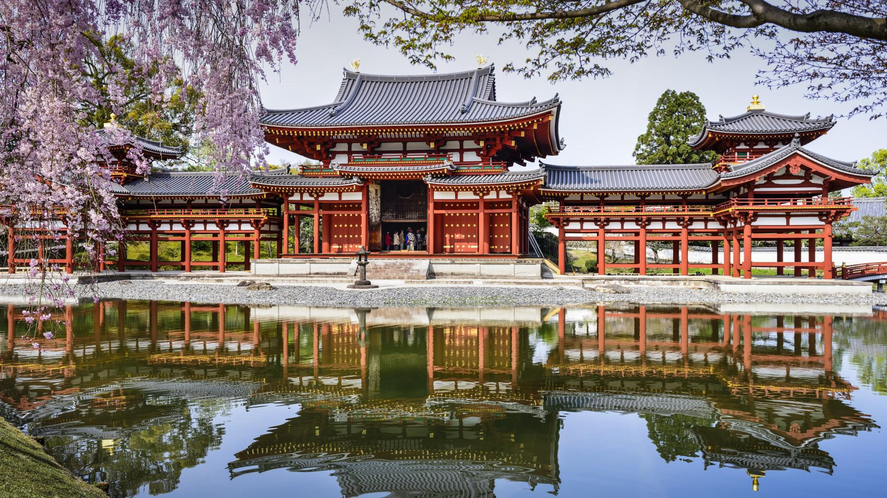

Melhores Países para Viajar
Explore as nossas sugestões e encontre o destino perfeito para a sua próxima aventura! Vai ser incrível!
Japão
Uma fascinante mistura de tradição e modernidade, com templos milenares, jardins serenos e cidades futuristas. A comida é maravilhosa!
(Sugestão: Visite Kyoto na primavera!)
Itália

Famosa por sua história rica, culinária deliciosa, arte renomada e paisagens deslumbrantes. Ah, e tem o Coliseu!
A melhor parte é a Comida. É impossivel comer mal!
Nova Zelândia

Um paraíso para os amantes da natureza e da aventura, com paisagens que parecem de outro planeta. Onde filmaram o Senhor dos Anéis!